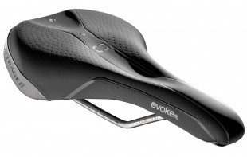
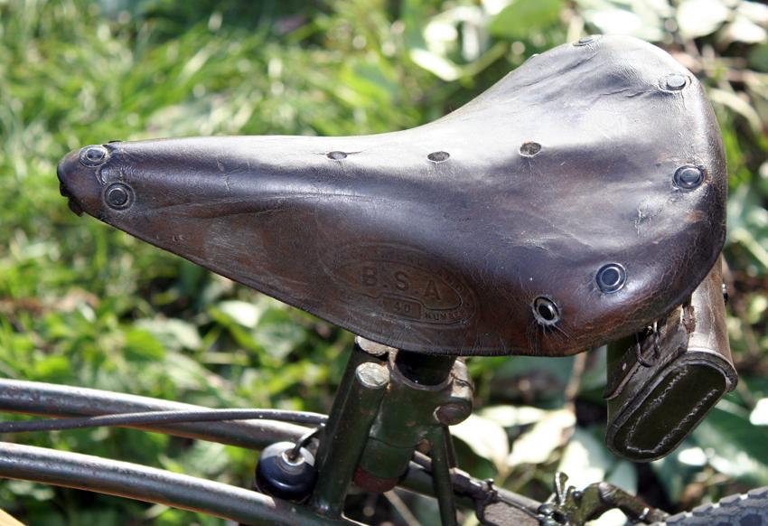

What Are saddles?

A bicycle saddle, often called a seat, is one of three contact points on an upright bicycle, the others being the pedals and the handlebars. The bicycle saddle has been known as such since the bicycle evolved from the draisine, a forerunner of the bicycle.
History

the saddle of the first bike was simply a wooden plank, the evolution of transport was not concerned about hoe comfy you are however about getting for A to B, the second bike ever projuced contained a cast iorn seat wich is more advanced then a wooden however still really uncomfy. its a fun fact to note that we went from simply producing a bike that moves to producing the comfy foam padded seats we use today!
Our top 10 saddles
- {{#each this}}
{{Name}}{{/each}}